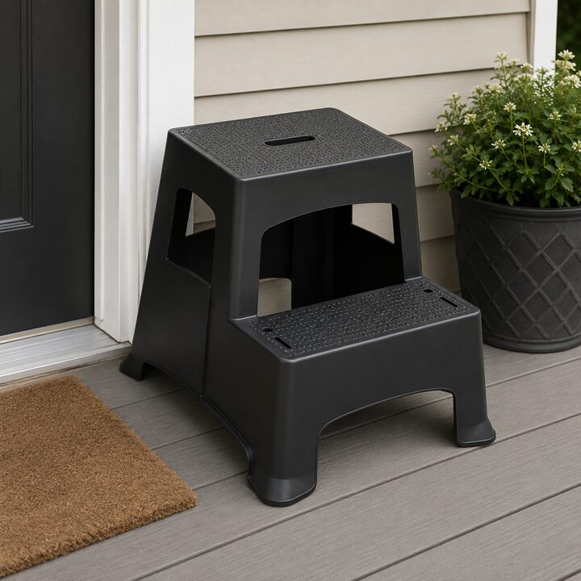
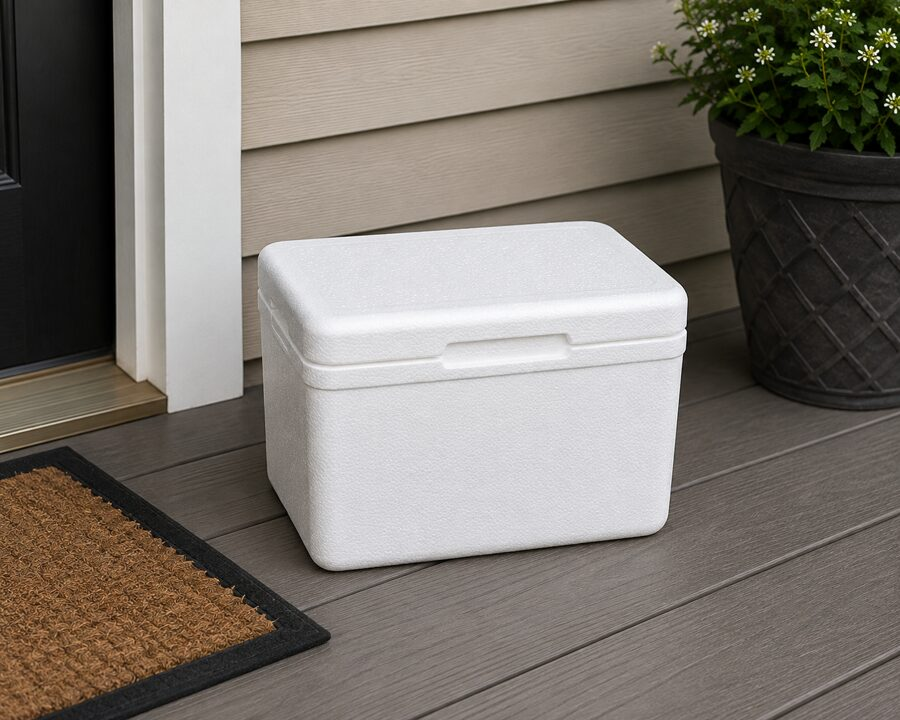

What people use instead
"Leave at door" is not a plan. It's a suggestion with no surface attached.
So people improvise. A cooler lid. A step stool that was already outside. The porch railing, if you're willing to bet the bag doesn't roll. The welcome mat, which was never rated for a bag of pad thai. Or the classic: the ground. Concrete, gravel, whatever's there.


None of these were made for this. They just happened to be nearby.
02 — The Design Decisions, Explained
Why it looks the way it does
PorchDrop looks simple because it is. That doesn't mean the specs are arbitrary.
Up to 75 lbs, because one order is rarely one bag. Multiple bags, drinks, a case of water someone ordered on impulse. It needs to hold real deliveries, not a hypothetical light one.
A raised lip, because wind exists, driveways slope, and dogs investigate. The lip is the difference between "delivered" and "delivered, then knocked over."
The surface is embossed, not printed. Printed wears off. Embossed you can feel and see at night, in rain, with a phone flashlight and forty seconds before the next stop.
UV-resistant, weatherproof HDPE. It sits outside permanently, in direct sun, through every season. A material that fades or cracks after a year isn't a real solution, it's a slower version of the same problem.
Legs come off. Porches aren't standardized, storage isn't infinite, and shipping a flat box is cheaper than shipping a table-shaped box.
Every decision traces back to the same place: someone who actually stood on a porch, in real weather, holding someone else's dinner.
03 — What's Patented
Yes, on a table
PorchDrop is patent pending. Specifically, the combination that makes it work as a delivery surface: the elevated design paired with the marked placement surface, purpose-built for how deliveries actually happen. Not decorative. Not incidental. Designed to be found, seen, and used the way it's meant to be used.
04 — Built By Someone Who Did The Job
2,000+ deliveries, one recurring problem
Over 2,000 deliveries. That's not a marketing number, it's a sample size. Enough trips to notice the same problem repeat at door after door: nowhere good to put the food.
PorchDrop wasn't sketched in a conference room. It came out of doing the job and getting annoyed at the same thing, over and over, until building the fix was easier than continuing to be annoyed.